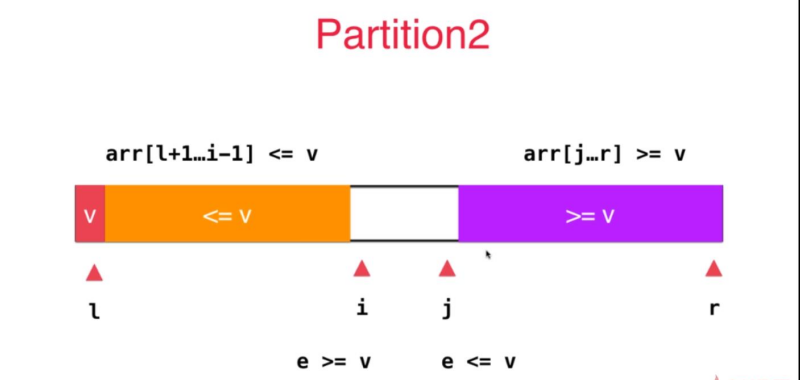
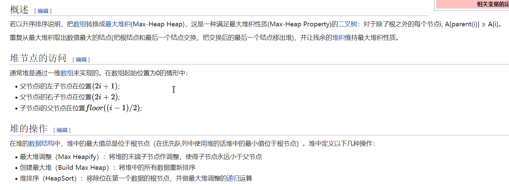

1.排序基础
①基础知识
- 稳定性：任意两个相等的数据，排序前后的相对位置不发生改变。
- 内排序：在排序期间数据对象全部存放在内存中的排序。
- 原地排序：在排序过程中不申请多余的存储空间，只利用原来存储待排数据的存储空间进行比较和交换的数据排序。
- 非原地排序：需要利用额外的空间来辅助排序。
- 逆序对：对于下标
i < j，如果A[i] > A[j]，则称(i, j)是一对逆序对。- 交换 2 个相邻元素正好可以消去 1 个逆序对。
- 讨论规则：
- 只讨论升序的整数排序
- 只讨论基于比较的排序
- 只讨论内部排序
- 排序算法一览（图片来源于网络）：
②自定义辅助函数
- 排序接口（所有排序类都会实现这个接口）
1 | package sort; |
- 构造待排序的数组
1 | package sort.util; |
- 排序辅助函数
- 方法一：验证数组是否有序（升序）
- 方法二：打印数组
- 方法三：交换数组中的元素
1 | package sort.util; |
- 测试排序算法的性能
- 函数入参：排序算法的名称、排序算法的实例、待排数组、待排数组的长度
- 方法内部：调用对应的排序算法，并打印执行用时及排序算法的正确性。
1 | package sort; |
③为什么要学习 O（n^2） 的排序算法？
O（n^2）的排序算法：所消耗的时间和数据之间成平方关系。
- 基础。先用最简单的方法解决问题，能加深对问题本身的理解，进而优化或者衍生出更复杂的解法（希尔排序就是通过插入排序的思想进行优化衍生而来的）。
- 并不是所有场合都需要写
O（n*logn）复杂度的排序算法。O（n^2）复杂度的排序算法编码简单，易于实现，是一些简单情景的首选。 - 在一些特殊情况下，简单的排序算法更有效。
- 作为子过程，可以改进更复杂的排序算法。
2.交换排序类 — 简单交换排序
①排序思路
- 方法：每一个位置的关键字与其后的所有关键字依次做比较，大则交换。
- 结果：执行第 i 次外层 for 循环后，第 i - 1 个位置上的关键字一定小于其后的所有关键字，并且其后的其他关键字还保持着未排序前的相对顺序。
- 缺点：每执行一次外层 for 循环，虽然进行了很多次的交换操作，但是只能消除一个逆序对。
②代码演示
1 | package sort.swapsort; |
③性能分析
- 稳定性：不稳定
- 是否是原地排序：是
- 平均时间复杂度：
O（n^2） - 最好的情况：
O（n^2）（顺序） - 最坏的情况：
O（n^2）（逆序） - 空间复杂度：
O（1）
3.交换排序类 — 冒泡排序
①排序思路
- 方法：（从后向前）依次比较两个相邻的元素，前一个元素大则交换位置，这样较小的元素就如同气泡般慢慢浮到上面，所以称之为冒泡排序法。
- 传统的冒泡排序
- 方法：依次两两比较（从后向前）并交换位置后，
arr[i]变为[i, n-1]区间里的最小值。若某次循环全程无交换，表明数组已经有序，提前退出循环。
- 方法：依次两两比较（从后向前）并交换位置后，
- 改进的冒泡排序
- 方法： 记录最后一次的交换位置，在此之前的元素（已经有序）在下一轮扫描中均不考虑。
- 优点：排序链表较为方便
②代码演示
- 传统的冒泡排序
1 | package sort.swapsort; |
- 改进的冒泡排序
1 | package sort.swapsort; |
③性能分析
- 稳定性：稳定
- 是否是原地排序：是
- 平均时间复杂度：
O（n^2） - 最好情况：
O（n）（顺序） - 最坏情况：
O（n^2）（逆序） - 空间复杂度：
O（1） - 冒泡排序在各种情况下的性能都没有插入排序好
4.选择排序类 — 简单选择排序
①排序思路
- 方法：首先在未排序序列中找到最小元素，存放到排序序列的起始位置，然后再从剩余未排序序列中继续寻找最小元素，放到已排序序列的末尾。以此类推，直到所有元素均排序完毕。
- 优点：所需移动元素的次数比较少
- 可以看做是简单交换排序的优化（每次找到最小值再交换）
②代码演示
1 | package sort.selectsort; |
③性能分析
- 稳定性：不稳定
- 是否是原地排序：是
- 平均时间复杂度：
O（n^2） - 最好情况：
O（n^2）（顺序） - 最坏情况：
O（n^2）（逆序） - 空间复杂度：
O（1）
5.插入排序类 — 直接插入排序
①排序思路
- 方法：通过构建有序序列，对于未排序数据，在已排序序列中从后向前扫描，找到相应位置并插入。（类比整理扑克牌的思想）。
- 特点：
- 在数组基本有序的情况下性能会非常高，远远优于选择排序，甚至比
O（n*logn）级别的排序算法还要快，有重要的实际意义。 - 可以在更加复杂的排序算法中作为子过程来进行优化
- 在数组基本有序的情况下性能会非常高，远远优于选择排序，甚至比
- 插入排序和选择排序的最大区别：对于内层循环，当找到插入位置时，插入排序可以提前结束。
- 插入排序和冒泡排序都需要消除逆序对，交换次数是一样的。
②代码演示
1 | package sort.insertsort; |
③性能分析
- 稳定性：稳定
- 是否是原地排序：是
- 平均时间复杂度：
O（n^2） - 最好情况：
O（n）（顺序） - 最坏情况：
O（n^2）（逆序） - 空间复杂度：
O（1）
6.插入排序类 — 希尔排序
①排序思路
- 定理 1：任意 n 个不同元素组成的序列平均具有
n * (n - 1) / 4个逆序对。 - 定理 2：任何仅以交换相邻两个元素进行排序的算法（每次只能消去一个逆序对），其平均时间复杂度都为
O（n^2）。 - 这意味着想要提高排序算法的效率，我们每次必须消去不止一个逆序对，所以我们需要每次交换相隔较远的两个元素，此时就可以一次消去多个逆序对（希尔排序的思想）。
- 方法：先将整个待排元素序列分割成若干个子序列（由相隔某个“增量”的元素组成的）分别进行直接插入排序，然后依次缩减增量再进行排序，待整个序列中的元素基本有序（增量足够小）时，再对全体元素进行一次直接插入排序。
- 步骤：
- 定义增量序列（递减到 1）
- 对每个增量进行增量间隔的直接插入排序
- 注意：
"Dk-间隔"有序的序列，在执行"Dk-1-间隔"排序后，其"Dk-间隔"仍然是有序的。- 为了保证结果有序，最后必须进行一次 1 间隔的排序（在进行 1 间隔的排序前，整个数组已经基本有序）。
- Hibbard 增量：
Dk = 2 ^ k - 1- 增量元素不互质，则小增量可能根本不起作用。
- 递推公式为：
D1 = 1、D2 = 3、D3 = 7、Dk = 2 * D(k − 1) + 1、D (k - 1) = (Dk - 1) / 2
- 特点：
- 是插入排序的改进版本，克服了插入排序每次只交换相邻两个元素的缺点。
- 实现起来比
O（n*logn）级别的排序算法简单
②代码演示
1 | package sort.insertsort; |
③性能分析
- 稳定性：不稳定
- 是否是原地排序：是
- 平均时间复杂度：
O（n^5/4） - 最好情况：
O（n^5/4）（顺序） - 最坏情况：
O（n^3/2）（逆序） - 空间复杂度：
O（1）
7.归并排序类 — 归并排序
①排序思路
- 方法：
- 归并排序（递归）
- 归并层数：
logn层（二分法），每层要处理的元素个数是一样的。 - 每层的归并过程的时间复杂度为
O（n）
- 归并层数：
- 改进的归并排序（递归）
- 优化 1：当 n 小到一定程度的时候，插入排序比归并排序快，此时用插入排序代替归并排序（元素很少时，数组近乎有序的可能性变大，插入排序有优势，排序的高级算法都可如此优化）。
- 优化 2：如果两部分各自有序，就不需要继续归并了。
- 自底向上的归并排序（迭代）
- 改进的自底向上的归并排序（迭代）
- 优化方法同 改进的归并排序（递归）
- 优点：
- 适用于排序链表
- 优化后的归并排序在排序近乎有序的数组时，速度也很快。
- 缺点：空间复杂度为
O（n）- 现代计算机中时间效率比空间效率重要的多，设计算法优先考虑时间复杂度，除非数据存储的空间是算法的重要瓶颈。
②代码演示
- 归并排序
1 | package sort.mergesort; |
- 改进的归并排序
1 | package sort.mergesort; |
- 自底向上的归并排序
1 | package sort.mergesort; |
- 改进的自底向上的归并排序
1 | package sort.mergesort; |
③性能分析
- 稳定性：稳定
- 是否是原地排序：否
- 平均时间复杂度：
O（n*logn） - 最好情况：
O（n*logn）（顺序） - 最坏情况：
O（n*logn）（逆序） - 空间复杂度：
O（n）
④衍生问题 — 求一个数组中逆序对的数量
- 我们再来复习一下什么是逆序对：对于下标
i < j，如果A[i] > A[j]，则称(i, j)是一个逆序对。 - 数组中逆序对的数量可以衡量一个数组的有序程度。
- 方法一（
O（n^2））：使用双重循环考察每一个数对，暴力解法。 - 方法二（
O（n*logn））：归并排序的思路求逆序对的个数。
1 | package sort.derivedquestion; |
8.交换排序类 — 快速排序
①排序思路
- 快速排序
- 20 世纪对世界影响最大的算法之一
- 方法：
- 普通快速排序
- 所有比基准值小的元素摆放在基准前面，所有比基准值大的元素摆在基准后面（与基准值相等的元素可以放到任何一边）
- 基准值如何选取：选择数列中的第一个元素
- 未优化的快速排序在排序随机数组时就已经快于归并排序，但是在排序近乎有序的数组时会非常慢。
- 改进的快速排序
- 优化 1：当 n 小到一定程度时，插入排序比快速排序快，此时用插入排序代替快速排序。
- 优化 2：每次随机选择数列中的一个元素作为基准。此时快速排序的最坏情况的时间复杂度依然是
O（n^2），但是退化到O（n^2）的概率极低。优化后，针对数字范围很小的数组，依然会非常慢（递归树不平衡，当数组有大量重复键值时，很大概率会将数组分成极不平衡的两部分）。
- 双路快速排序
- 方法：将与基准值相等的元素分散到左右两部分
- 优化后在排序近乎有序的数组时也会比归并排序快

- 三路快速排序
- 方法：将与基准值相等的元素放在中间，下次递归时直接不用处理等于基准值的元素（它们已经在正确的位置上了）。
- 在存在大量重复键值的情况下，远远快于其他排序，其他情况稍微慢于二路快速排序。
- 归并排序与快速排序的比较
- 都使用了分治算法的基本思想（分治算法：顾名思义，分而治之，就是将原问题分割成同等结构的子问题，再将子问题逐一解决后，原问题也就得到了解决。）
- 归并排序的重点在于治，快速排序的重点在于分。
- 归并排序可以保证每次都将数组平均一分为二，快速排序则无法保证。所以快速排序调用递归的过程所生成的递归树比归并排序的差，且不能完全保证递归树的高度是
logn，最坏情况下递归树的高度是O（n）（当数组近乎有序时）。 nlogn级别的排序算法也有常数上的差异，快速排序相对占优。
- 归并排序与快速排序的选择
- 一般系统级别的排序，都是使用快速排序实现的。
- 如果一个系统对空间相对敏感，归并排序就不适合。
- 在系统级别的类库中，若想实现稳定的排序，通常选择的是归并排序。但是也可以通过自定义比较函数，使排序算法不存在稳定性的问题。
- 缺点：空间复杂度为
O（logn），有logn层栈空间来保存每一层递归过程中的临时变量，以供递归返回时调用。
②代码演示
- 快速排序
1 | package sort.swapsort; |
- 改进的快速排序
1 | package sort.swapsort; |
- 双路快速排序
1 | package sort.swapsort; |
- 三路快速排序
1 | package sort.swapsort; |
③性能分析
- 稳定性：不稳定
- 是否是原地排序：否
- 平均时间复杂度：
O（n*logn） - 最好情况：
O（n*logn）（顺序） - 最坏情况：
O（n^2）（逆序） - 空间复杂度：
O（logn）（递归）
④衍生问题 — 取数组中第 N 小的元素
方法一（O（n^2））：排序后求解
方法二（O（n*logn））：快速排序的思路求解数组中第 N 小的元素
1 | package sort.derivedquestion; |
9.选择排序类 — 堆排序
- 基础的最大堆的构建和使用
1 | package heap; |
- 改进的最大堆的构建和使用 1
1 | package heap; |
- 改进的最大堆的构建和使用 2
1 | package heap; |
- 测试最大堆的构建和使用
1 | package heap; |
①排序思路
- 堆最重要的应用是对动态数据的维护
- 方法：

- 堆排序：
- 方法：将 n 个元素逐个插入到一个空堆（最大堆，
arr[1]处存储最大堆的第一个元素）中，算法的时间复杂度是O（n*logn），然后将堆中的元素逐个移出，使用额外的空间从后向前存放取出的元素。 - 未优化的堆排序慢于快速排序和归并排序
- 缺点：空间复杂度为
O（n）
- 方法：将 n 个元素逐个插入到一个空堆（最大堆，
- 改进的堆排序 1：
- 优化 1：使用赋值操作代替交换操作
- 优化 2：将数组原地构建成最大堆（只需要处理 n / 2 个元素）
- 优化建堆的堆排序整体速度慢于快速排序和归并排序。
- 改进的堆排序 2：
- 原地堆排序，
arr[0]处存储最大堆的第一个元素。 - 不占用额外空间的堆排序比占用额外空间的堆排序快一点
- 原地堆排序，
②代码演示
- 堆排序
1 | package sort.selectsort; |
- 改进的堆排序 1
1 | package sort.selectsort; |
- 改进的堆排序 2
1 | package sort.selectsort; |
③性能分析
- 稳定性：不稳定
- 是否是原地排序：是
- 平均时间复杂度：
O（n*logn） - 最好的情况：
O（n*logn）（顺序） - 最坏的情况：
O（n*logn）（逆序） - 空间复杂度：
O（1）
10.性能比较
①排序随机数组
- 测试各个排序算法针对随机数组的排序性能
1 | package sort; |
②排序近乎有序的数组
- 测试各个排序算法针对近乎有序的数组的排序性能
1 | package sort; |
③总结
- 每一种排序算法都有它存在的理由，没有一种排序算法在任何情况下的表现都是最好的，排序算法的具体性能依赖于待排数据的特点。
- 排序算法对比（图片来源于网络）：
- 排序算法的应用场景（图片来源于网络）：
附录
- 我的个人博客：messi1002.top
- 如有错误或疑惑之处 请联系 wjymessi@163.com
- 关于 数据结构与算法 的更多代码 请查看我的 GitHub仓库